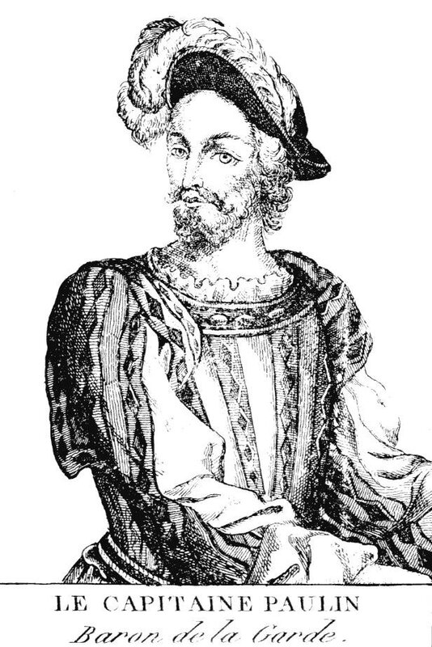
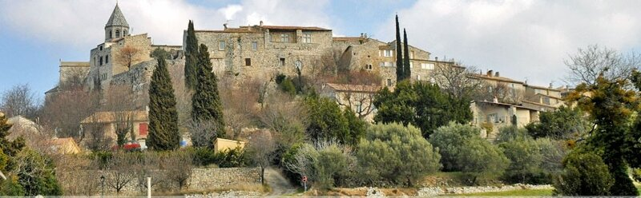
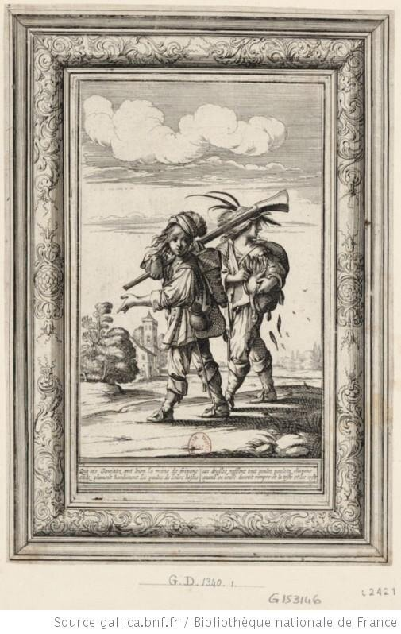

Мы уже сказали ранее, что историки не баловали вниманием барона де Лагарда. Сведения о нем скудны и противоречивы, хотя многими исследователями он признается одним из самых «великих капитанов», которые служили суверенам Ангулемской ветви дома Валуа: Франциску I, Генриху II, Франциску II, Карлу IX и Генриху III. Мне удалось найти только один из его портретов, который помещен в одном из предыдущих постов. Поместим здесь этот портрет еще раз, чтобы не обращаться к старым записям.

Даже дату его рождения нельзя признать вполне достоверной. Биографы относят ее на период между 1498 и 1500 годами. Некоторые просто берут среднее значение – 1499 год. В последнее время стали появляться статьи, которые касаются роли барона де Лагарда в дипломатической жизни той эпохи, однако его морская карьера должного освещения пока не получила. Ввиду того, что биография Антуана Эскалена практически не освещалась в русскоязычной литературе, остановимся на ней несколько подробней, чем мы это делаем в подобных случаях. Источниками нам послужат: – Richer, Adrien, 1720-1798; Vies des plus célébres Marins, т.3-4 (1789); – Brantôme, Pierre de Bourdeille (1540 – 1614) Oeuvres complètes, Grands capitaines françois. Tome 4(1868); – Maurand, Jerôme Itinéraire de Jerome Maurand d'Antibes à Constantinople (1544) пер. с ит., 1901; а также статья Bouvier, Yann Antoine Escalin des Aimars de la Garde-Adhémar au Siège de Nice le Parcours d’un Ambassadeur de Francois Ier.
Первые годы жизни Антуана Эскалена, как принято говорить в подобных случаях, «покрыты завесой тайны». В его ранних биографиях сообщается, что родился он в «очень бедной» семье, на постели, покрытой соломой. Впрочем, о какой семье идет речь – неясно. Достоверным считается лишь место рождения –Ла Гард-Адемар (la Garde-Adhémar). Расположено оно в нынешнем департаменте Дром на юго-востоке Франции, в исторической области Рона-Альпы.

Ла Гард-Адемар (Источник: Recoins de France)
А легенда о доме-развалюхе и соломенном ложе, как представляется, была создана автором биографии Брантомом, специалистом по таким выдумкам. К какой семье принадлежал Антуан Эскален – также не ясно до сих пор. Называют его, в частности, Антуан Эскален Дезэмар (Antoine Escalin des Aimars), относя таким образом к богатому и известному семейству des Aimars. С другой стороны пишут также, что к этому роду принадлежала лишь его мать, а сам он был внебрачным ребенком Луи Адемара барона де Лагарда. Однако твердых доказательств ни одной из этих версий нет. Можно лишь с уверенностью сказать, что даже если он и имел благородное происхождение, все же вряд ли имел отношение к достаточно известной в то время семье. В исторических источниках он упоминается под различными именами, прозвищами и титулами; вот, в частности, как величает его граф д'Аллар: Antoine Escalin, dit le capitaine Poulin, baron de La Garde-Adhémar, seigneur de Pierrelatte et marquis de Brégançon, а также Le Pollin, Poullain, Pollin, и d'Antoine Escalin des Aimars, Aymars, Eymards et Aymards, Esmars. В конце концов он стал чаще всего упоминаться как барон де Лагард (baron de La Garde). (Le Comte d’Allard, «Escalin, pâtre, ambassadeur et général des galères de France : recueil de documents concernant sa vie », Bulletin de la société d’archéologie et de statistiques de la Drôme, Valence, 1896-1897. В дальнейшем мы будем ссылаться на эту работу лишь по имени ее автора).
В архивах Франции сохранилось несколько расписок Антуана за полученные им деньги от королевского казначея. На этих расписках, относящихся к 1544-1575 гг. не стоит никаких титулов, а лишь одно имя «Escalin». Это же имя употребляется во всех королевских указах Франциска I, относящихся к барону. И лишь два письма Антуана Эскалена самым близким своим друзьям были подписаны «Le Pollin».
Брантом пишет, что в раннем юношеском возрасте Антуан, несмотря на сопротивление отца, увязался за капралом, который проездом через Ла Гард направлялся на войну в Пьемонт, Северную Италию, и в течение двух лет был его слугой и оруженосцем (гужа, goujat).

[На гравюре известного художника Абрахама Босса (1604 – 1676) из Французской национальной библиотеки изображены двое юношей-гужа, несущие оружие и сапоги своего сеньора. Не знаю почему, но в комментарии библиотеки эта работа названа «Два мародера», видимо потому, что один из юношей несет курицу. Более подходящее название эта гравюра имеет в собрании Musée Stewart au Fort de l'île Sainte-Hélène , Монреаль, Канада: «Гужа, несущие оружие и сапоги» (Goujats portant armes et bottes). Впрочем, и там не обходится без упоминания о ворованных курах.]
В дальнешем Антуан стал солдатом, потом капралом, и, наконец, в 1537 году (когда ему было уже под сорок) – лейтенантом. Из этого ясно, что свою начальную военную карьеру Эскален делал, опираясь только лишь на свои личные качества, а не на протекцию влиятельных родственников. Активный и отважный, именно в те годы он получает прозвище Le Polin (Paulin) – "Жеребец". В документальных источниках мы встречаемся с лейтенантом Эскаленом, когда он во главе своего отряда спешит на помощь французам, осажденным войсками императора Карла V в замке Шато-Дофин (Chateau-Dauphin, 22 км к северо-западу от Клермон-Феррана, центра Оверни). За проявленное при обороне замка мужество и военную доблесть Антуан Эскален 7 августа 1536 года получает личную благодарность короля Франциска I, звание капитана и должность сеньора крепости Шато-Дофин. А уже 20 июня 1539 года «за безупречную военную службу» его включают в «дворянскую сотню военной свиты короля» («cent gentilshommes ordinaires de l’hostel de roi»), что обеспечивает ему ежемесячное жалованье в 32 турских ливра (1 турский ливр = 20 су). Но не это главное. Его военные заслуги привлекают к нему внимание наместника короля в Пьемонте де Ланге, сеньора дю Беллэ (de Langeay, seigneur du Bellay). Чтобы привлечь к личности Эскалена внимание королевского двора, де Ланге по всякому поводу и без повода посылает его в Париж с мелкими поручениями. И когда в 1541 году от рук наемных убийц императора погиб посол Франции в Османской империи шевалье Антуан де Ринкон, де Ланге рекомендует королю назначить на этот пост Антуана Эскалена.
Почему король выбрал из множества своих капитанов для этой миссии капитана Полена? Прямого ответа на этот вопрос мы не найдем, но некоторые соображения высказать можно. Во-первых, Эскален умел располагать к себе и даже одной встречи с ним было достаточно, чтобы почувствовать близость, что является немаловажной положительной чертой для дипломата. Во-вторых, капитан Полен очень умело использовал те связи, которые приобрел за годы своей службы в армии, в частности, близкое знакомство с сеньором дю Беллэ. В-третьих, из более поздних документов становятся известными его тесные отношения с кардиналом д'Арманьяком, духовником Маргариты Наваррской, сестры Франциска I. Возможно, существовали и другие, неизвестные нам, основания для назначения Антуана Эскалена на важный дипломатический пост во Франции того времени. Последующие события подтвердили, что этот выбор оказался весьма удачным. Обширная переписка барона де ла Гарда с королем демонстрирует его высокую культуру, блестящее знание французского языка, и другие качества, которые обнаруживают в нем остроумного и проницательного человека, homme d’esprit, как говорят в подобных случаях французы. И внешние данные барона как нельзя лучше подходили для его новой должности: «Прекрасная фигура, высокий рост, элегантная и в то же время простая манера держаться» (Le Comte d’Allard, 1896, p. 22). Все это сыграло немаловажную роль в назначении Эскалена на дипломатическую должность.
Продолжим в следующий раз.